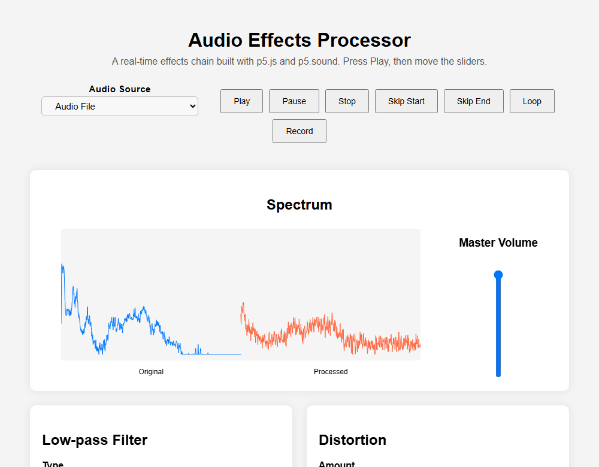
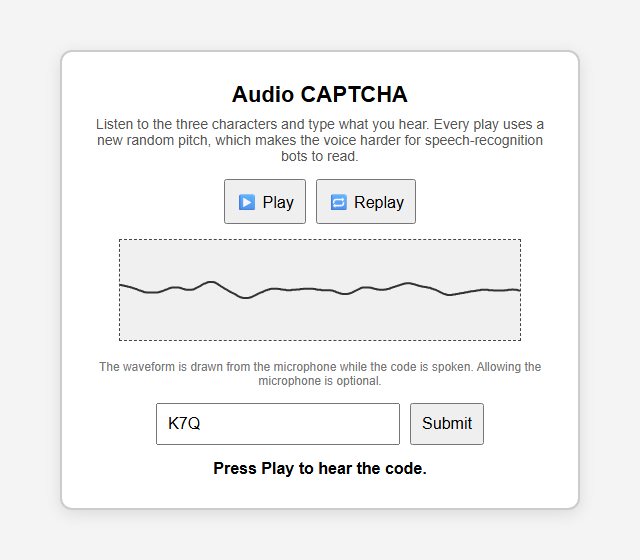
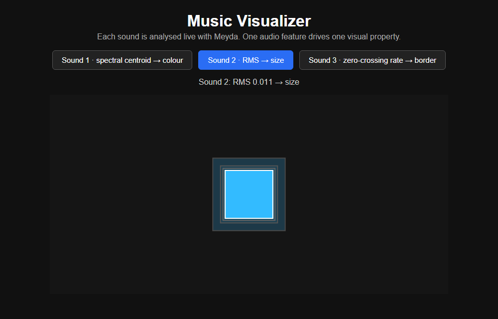
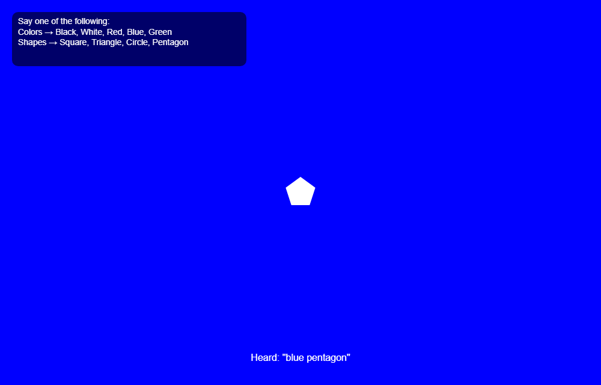

Four interactive audio apps that run straight in the browser, built with p5.js, p5.sound, p5.speech and Meyda. Nothing to install.




Best in Chrome or Edge on a desktop. Voice control needs one of them. The browser asks for microphone access in the CAPTCHA (optional), in the effects processor when you pick the microphone, and in the voice-controlled visualizer.